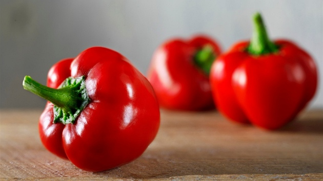

Paprika (Capsicum) je rod rostlin z čeledi lilkovité (Solanaceae). Jsou to vytrvalé keře nebo i malé stromy s jednoduchými střídavými listy a pravidelnými pětičetnými květy, které jsou opylované hmyzem. Plodem je dužnatá bobule. Semena v přírodě rozšiřují ptáci. Rod zahrnuje asi 42 druhů a pochází z tropické a subtropické Ameriky, kde je rozšířen od jihu USA po Argentinu. Papriky mají dlouhou kulturní historii, sahající tisíce let do minulosti, a byly široce domestikovány dávno před objevením Ameriky. Jejich pálivost je způsobena obsahem specifických alkaloidů, z nichž nejznámější je kapsaicin. Hospodářsky nejvýznamnějším druhem je paprika setá, která je pěstována v celé řadě různorodých forem, dále paprika křovitá a paprika čínská. V oblastech mírného pásu bývají pěstovány jako jednoletky. Největším světovým producentem je Čína. Papriky a výtažky z nich mají význam v lékařství a okrasné kultivary jsou pěstovány jako pokojové nebo zahradní rostliny.

Alan Deutsch, 2A